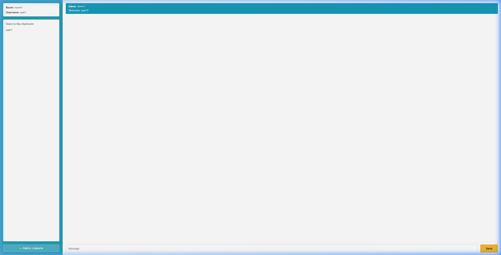
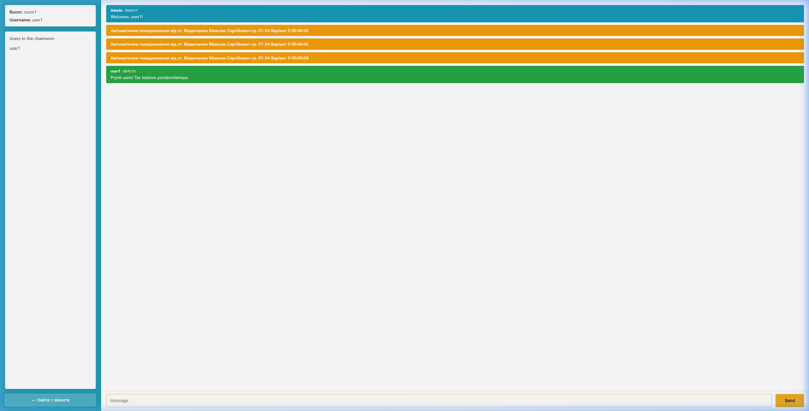
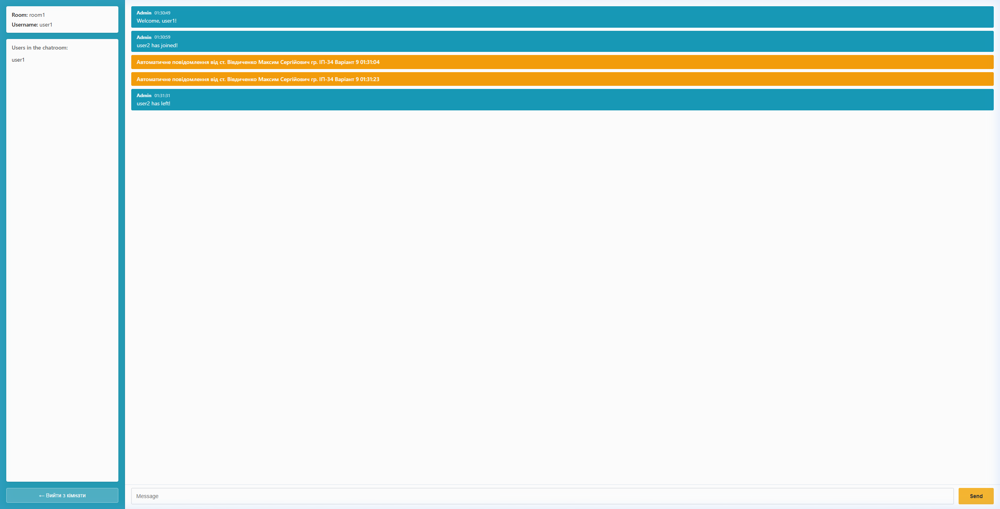
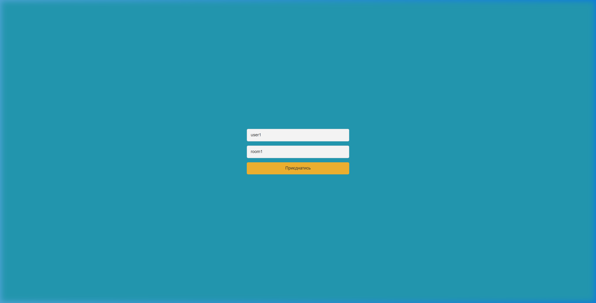

Лабораторна робота №1
1. Мета роботи та стек технологій
Мета роботи: Дослідити протокол повнодуплексного обміну даними в реальному часі WebSocket та можливості бібліотеки Socket.IO. Ознайомитися з архітектурою створення real-time серверів на базі фреймворку NestJS та клієнтських веб-застосунків на Angular 19. Реалізувати повнофункціональний веб-чат з підтримкою кімнат (rooms), обміну повідомленнями, моніторингу активних користувачів та періодичного розсилання службових сповіщень відповідно до індивідуального завдання.
Використаний стек технологій:
- Серверна платформа: Node.js (v22), NestJS 11, TypeScript.
- Real-time комунікація:
@nestjs/websockets,@nestjs/platform-socket.io, Socket.IO Server (v4.8). - Клієнтський інтерфейс: Angular (Standalone Components, Signals, Reactive Forms), CSS Flexbox/Grid,
socket.io-client. - Тестування: Jest, E2E WebSocket тест-сьюти.
- Контейнеризація: Docker, Docker Compose (багатоетапні збірки, node:22-alpine).
2. Зміст та теоретичні відомості
Традиційний протокол HTTP/1.1 функціонує за моделлю «запит-відповідь» (request-response). Для систем реального часу (онлайн-чати, трекінг котирувань, ігри) такий підхід призводить до великої затримки (latency) та надлишкового навантаження через постійне пересилання HTTP-заголовків. Протокол WebSocket (RFC 6455) забезпечує встановлення постійного, двонаправленого (full-duplex) TCP-з'єднання між клієнтом і сервером після одноразового HTTP Upgrade Handshake.
| Характеристика | HTTP Polling / Long-Polling | WebSocket / Socket.IO |
|---|---|---|
| Модель зв'язку | Однонаправлена (клієнт запитує → сервер відповідає) | Повнодуплексна (full-duplex), рівноправний обмін |
| Накладні витрати | Високі (HTTP заголовки cookie, auth у кожному запиті) | Мінімальні (фрейми TCP розміром від 2 байт) |
| Затримка (Latency) | Значна (залежить від інтервалу опитування) | Мілісекундна (дані передаються миттєво) |
| Кімнати та простори | Необхідна власна ручна реалізація маршрутизації | Вбудована підтримка Rooms та Namespaces в Socket.IO |
T = 10 + N секунд (для варіанту 9: 10 + 9 = 19 секунд) автоматично відправляти у всі активні кімнати повідомлення наступного змісту:
«Автоматичне повідомлення від ст. Вівдиченко Максим Сергійович гр. ІП-34 Варіант 9 HH:mm:ss».
3. Хід виконання роботи
3.1. Архітектура серверної частини (NestJS)
Серверну частину організовано за модульним принципом згідно з офіційними рекомендаціями NestJS:
ChatGateway— шлюз WebSocket, що декларує прослуховування подійjoin,message,leave, а також перехоплює життєвий цикл з'єднаньhandleConnectionтаhandleDisconnect.ChatService— інкапсулює управління станом користувачів, мапінг сокетів та кімнат.AutoBroadcastService— сервіс-шедулер фонової розсилки повідомлень, що автоматично зупиняє таймер при знищенні модуля (OnModuleDestroy), запобігаючи витокам пам'яті.student.config.ts— централізований конфігураційний файл, що визначає ПІБ студента, групу та номер варіанту.
3.2. Рефакторинг та дотримання принципів чистого коду (SOLID, DRY)
В процесі розробки було проведено глибокий рефакторинг коду для забезпечення принципів SRP (Single Responsibility Principle) та DRY (Don't Repeat Yourself):
- Виділення утиліти часу (
TimeUtils): Усунено дублювання форматування часу між різними модулями. Створено єдиний статичний класserver/src/common/time.util.ts, який форматує час у 24-годинному форматіHH:mm:ss. - Виділення генератора ідентифікаторів (
IdUtils): Логіку створення колізійно-безпечних ID повідомлень винесено в окремий утилітарний класserver/src/common/id.util.ts. - Оптимізація шлюзу: Створено повторно використовувані допоміжні методи
createAdminMessage,sendAdminMessage,broadcastAdminMessageToRoomтаhandleUserDeparture, що виключило повторення коду при обробці подій входу, виходу та раптового розриву з'єднання.
// server/src/common/time.util.ts - єдина точка форматування часу
export class TimeUtils {
static formatTime(date: Date = new Date()): string {
return date.toTimeString().split(' ')[0]; // 'HH:mm:ss'
}
}
// server/src/chat/auto-broadcast.service.ts - періодична розсилка (Варіант 9: 19 сек)
const intervalSeconds = 10 + (defaultStudentConfig.variant || 1); // 10 + 9 = 19 с
this.intervalTimer = setInterval(() => {
this.sendAutoMessage();
}, intervalSeconds * 1000);3.3. Розробка клієнтської частини (Angular)
Клієнтський застосунок реалізовано з використанням архітектури Standalone-компонентів Angular:
SocketService: Singleton-сервіс, що інкапсулює екземплярSocketбібліотекиsocket.io-client, транслює вхідні сокет-події у реактивні сигнали (Angular Signals) та забезпечує метод повторного підключення.JoinRoomComponent: Компонент автентифікації та вибору кімнати з валідацією полів форми.ChatRoomComponent: Робочий простір чату. Містить сайдбар активних користувачів, стрічку повідомлень з візуальним розмежуванням системних сповіщень, автоматичної розсилки (помаранчевий банер) та користувацьких реплік (зелені блоки із часовими мітками), а також кнопку безпечного виходу.- Розділення файлів: Відповідно до вимог production-ready архітектури кожен компонент розділено на три окремі файли:
*.ts(логіка),*.html(семантичний шаблон) та*.css(стилізація).
3.4. Автоматизоване тестування та контейнеризація
Створено комплекс E2E тестів (Jest), що перевіряють повноцінний життєвий цикл роботи системи: успішне з'єднання двох клієнтів через сокети, вхід в одну кімнату, ізоляцію повідомлень між різними кімнатами, надходження періодичних розсилок та коректне оновлення списку користувачів при відключенні. Усі 20 тестів проходять успішно.
Створено docker-compose.yml для запуску бекенду (порт 3000) та фронтенду (порт 4200) в ізольованих Docker-контейнерах за одну команду docker compose up --build.
4. Отримані результати та демонстрація роботи
Для підтвердження повної працездатності застосунку було проведено наскрізне тестування за допомогою інтелектуального браузерного агента. Нижче наведено скріншоти ключових етапів роботи веб-чату.
JoinRoomComponent).
user1 та ідентифікатор кімнати room1. Реалізовано валідацію обов'язковості заповнення полів та стилізовану кнопку «Приєднатись».

ChatRoomComponent) одразу після приєднання.
join, приєднав сокет до кімнати room1 та надіслав вітальне повідомлення: Admin 00:44:17 Welcome, user1!. У лівій панелі оновлено перелік активних учасників кімнати.

AutoBroadcastService з точним інтервалом 19 секунд:
•
00:44:26 → «Автоматичне повідомлення від ст. Вівдиченко Максим Сергійович гр. ІП-34 Варіант 9 00:44:26»•
00:44:45 (+19 с) → наступне системне повідомлення з актуальним часом.•
00:45:04 (+19 с) → наступне системне повідомлення.Також продемонстровано користувацьке повідомлення від
user1: «Pryvit usim! Tse testove povidomlennya.» (зелений блок).

user2).
Admin 01:30:59 user2 has joined!) та про його відключення (Admin 01:31:31 user2 has left!). При цьому автоматична розсилка Варіанту 9 продовжує стабільно транслюватися всім присутнім учасникам.

leave, сокет відписується від кімнати на сервері, а Angular за допомогою реактивних сигналів миттєво перемикає інтерфейс назад на форму підключення.
5. Висновки
Під час виконання лабораторної роботи №1 було досягнуто наступних результатів:
- Досліджено теоретичні основи протоколу WebSocket та його відмінності від класичної моделі HTTP. Доведено переваги WebSocket для застосунків реального часу завдяки мінімальному overhead та низькій затримці передачі даних.
- Розроблено високопродуктивний бекенд на фреймворку NestJS з використанням модуля
@nestjs/websocketsта бібліотеки Socket.IO. Реалізовано надійне керування з'єднаннями, кімнатами та доставкою повідомлень. - Успішно реалізовано індивідуальне завдання за Варіантом №9: сервіс
AutoBroadcastServiceздійснює фонову розсилку персоналізованого службового сповіщення кожні 19 секунд ($10 + 9$) з відміткою часу у всі активні кімнати. - Проведено рефакторинг за принципами SOLID (SRP) та DRY: виділено окремі утиліти
TimeUtilsтаIdUtils, оптимізовано методи розсилки системних сповіщень. - Розроблено клієнтський застосунок на Angular з реактивним управлінням станом на базі Signals, модульною структурою компонентів та адаптивним дизайном.
- Створено комплект наскрізних E2E тестів Jest, що гарантують надійність роботи сокет-шлюзу. Застосунок успішно упаковано в контейнери за допомогою Docker Compose.